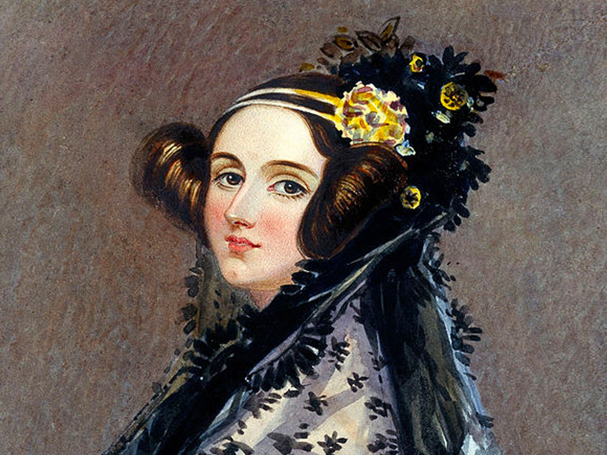
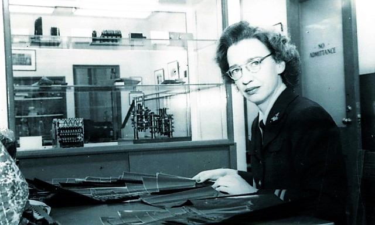
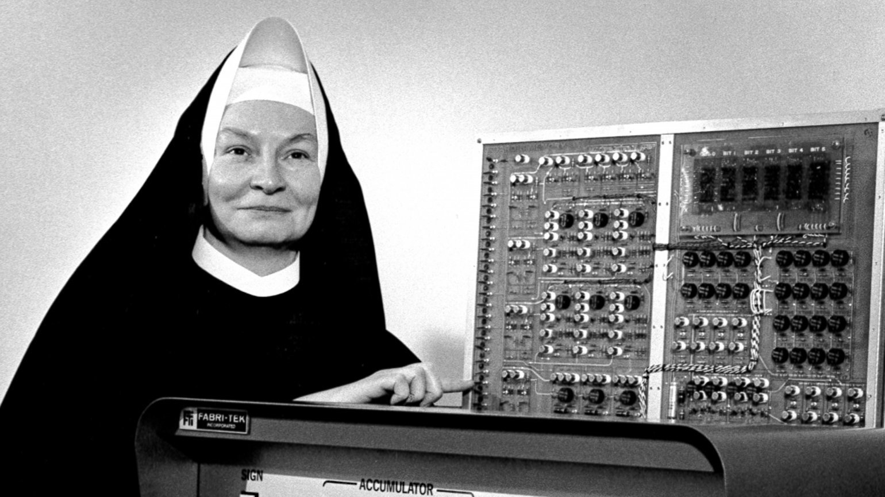

Ада Лавлейс

Дочь английского поэта Байрона Ада Лавлейс родилась в 1815 году в Лондоне — за 100 лет до
создания
первого прототипа настоящего компьютера. Тем не менее именно она написала в 1843 году первую в
истории программу — для вычислительной машины Чарльза Бэббиджа.
«Аналитическая машина» стала прообразом современного компьютера, иногда её даже называют
«протокомпьютером Бэббиджа». Она механически складывала 31-разрядные числа и вычисляла
многочлены
вплоть до седьмого порядка. Бэббиджу так и не удалось собрать рабочую версию машины, но после
смерти
инженера это сделали его ученики. Сейчас действующая копия устройства хранится в музее
Нью-Йорка.
Программа Ады Лавлейс подсчитывала числа Бернулли. Девушка самостоятельно продумала операции и
нашла способ реализовать переменные в механической машине. Правда, современные разработчики
нашли
ошибку в её расчётах — когда перевели программу на C и Python. Поэтому Лавлейс можно считать ещё
и
автором первого бага.
В честь дочери Байрона Министерство обороны США в 1980 году назвало объектно-ориентированный
язык
программирования Ada.
Грейс Хоппер

Грейс Хоппер родилась в Нью-Йорке в 1906 году. Ещё в раннем детстве она научилась читать,
интересовалась математикой и техническими науками. После школы поступила в Вассарский колледж —
первый в США колледж, который давал женщинам полноценное высшее образование. Там Грейс получила
степень бакалавра математики и физики. Потом она отучилась в Йельском университете, который
окончила в 1930 году со степенью магистра математики.
В 1940 году Грейс решила поступить на военную службу. Она быстро убедила руководство перевести
её во флот и получила должность третьего программиста на легендарном Mark I в Бюро
артиллерийских вычислительных проектов при Гарвардском университете.
Вскоре она поняла, что рутинные операции в вычислениях можно автоматизировать с помощью
подпрограмм. Так, в 1944 году она создала первую в мире подпрограмму для ЭВМ, вычисляющую
sin(x), а в 1951 году разработала первый компилятор, который преобразовывал псевдокоды в
машинные команды.
Она руководила командой разработчиков системы АТ-3 (система состояла из языка программирования и
компилятора). Чтобы создать язык, Грейс выбрала 30 английских слов для обозначения названий
операций. Например, add («сложить»), compare («сравнить»), transfer («переслать»). Слова она
подбирала так, чтобы каждая из команд содержала уникальную комбинацию из первой и третьей букв.
Это позволяло компилятору при генерации машинного кода не учитывать остальные буквы.
Также считается, что Грейс придумала термин debugging. В 1947 году в работе компьютера Mark II
произошёл сбой. Грейс и её коллеги стали искать причину и обнаружили мотылька, который застрял в
реле и блокировал сигнал. После этого случая Хоппер назвала процесс поиска неполадок
«дебаггингом» системы. Термин довольно быстро прижился в среде программистов.
Сестра Мэри Келлер

Мэри Кеннет Келлер вместе с Джоном Кемени и Томасом Курцем создавала ядро DTS BASIC. В 1960-е
она была преподавателем и популяризатором новой в то время науки — информатики, а ещё стала
первым в истории доктором информатики в США. При этом добрую половину своего времени она уделяла
благотворительности и богослужению — Мэри была католической монахиней.
В 19 лет она стала сестрой милосердия Пресвятой Девы Марии. В 30 — бакалавром математических
наук, в 40 — магистром математики и физики, а в 45 начала работать в мастерской Национального
научного фонда в центре информатики в Дартмутском колледже.
В 1965 году Келлер создала и возглавила факультет информатики в Католическом женском колледже
сестёр милосердия Пресвятой Девы Марии. Она руководила факультетом в течение 20 лет и
популяризировала информатику среди женщин, поддерживала работающих матерей и даже призывала
брать детей с собой на занятия. А ещё Келлер помогла создать Ассоциацию пользователей
компьютеров в образовании (ASCUE) и написала четыре книги.